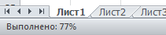
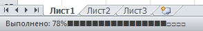
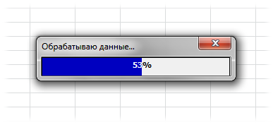

Tips_ShowProgressBar.xls (79,0 KiB, 1 190 скачиваний)
Tips_ShowProgressBar.xls (79,0 KiB, 1 190 скачиваний)Отобразить процесс выполнения
Часто при создании кодов в VBA используется обращение к ячейкам, листам, книгам и т.д. и их обработка в циклах. Пара примеров подобных циклов:
Если операция в цикле выполняется за пару секунд - это вполне приемлемо и отражать графически подобные действия нет нужды. Но, если циклы "крутятся" по полчаса - вполне неплохо иметь возможность видеть на какой стадии цикл. Здесь есть один нюанс: циклы могут быть как с заранее известным кол-вом итераций, так и без этого понимания.
Цикл Do While из первого кода статьи Просмотреть все файлы в папке является циклом условия. Т.е. заранее неизвестно сколько файлов будет обработано и следовательно невозможно отразить прогресс выполнения задачи в процентах.
Циклы вроде For Each и For ... Next как правило дают возможность определить общее кол-во элементов к обработке, т.к. применяются как правило к коллекциям и объектам, у которых есть свойство .Count. Углубляться в этой статье не стану - это лишь предисловие, чтобы было ясно, почему и зачем далее в статье продемонстрированы разные подходы отображения процесса выполнения.
Отобразить же процесс можно двумя способами:
Application.StatusBar = "Привет"
|
1 |
Чтобы сбросить значения StatusBar и передать управление им обратно самому Excel необходимо выполнить строку:
|
1 |
делать это обязательно, т.к. в противном случае вместо системных доп.сообщений будет постоянно показываться то значение, которое мы задали. Конечно, можно перезапустить Excel, но куда правильнее дописать в код строку, приведенную выше.
Как я уже упоминал - циклы могут быть с заранее неизвестным кол-вом итераций. В таких случаях очень удобно показывать стадию выполнения хотя бы из тех побуждений, чтобы пользователь видел, что программа не "зависла". на примере кода из статьи Просмотреть все файлы в папке:
Sub Get_All_File_from_Folder() Dim sFolder As String, sFiles As String 'диалог запроса выбора папки с файлами With Application.FileDialog(msoFileDialogFolderPicker) If .Show = False Then Exit Sub sFolder = .SelectedItems(1) End With sFolder = sFolder & IIf(Right(sFolder, 1) = Application.PathSeparator, "", Application.PathSeparator) 'отключаем обновление экрана, чтобы наши действия не мелькали Application.ScreenUpdating = False sFiles = Dir(sFolder & "*.xls*") Do While sFiles <> "" 'показываем этап выполнения Application.StatusBar = "Обрабатывается файл '" & sFiles & "'" 'открываем книгу Workbooks.Open sFolder & sFiles 'действия с файлом 'Запишем на первый лист книги в ячейку А1 - www.excel-vba.ru ActiveWorkbook.Sheets(1).Range("A1").Value = "www.excel-vba.ru" 'Закрываем книгу с сохранением изменений ActiveWorkbook.Close True 'если поставить False - книга будет закрыта без сохранения sFiles = Dir Loop 'возвращаем ранее отключенное обновление экрана Application.ScreenUpdating = True 'сбрасываем значение статусной строки Application.StatusBar = False End Sub
Если запустить код, то перед открытием каждой книги в строке StatusBar будет показано какой именно файл отрывается и обрабатывается. И так с каждым файлом:
В случае же с циклами, количество итераций которых есть возможность определить, можно показывать этап выполнения в процентах. Например, цикл по всем выделенным ячейкам:
Sub ShowProgressBar() Dim lAllCnt As Long, lr as Long Dim rc As Range 'кол-во ячеек в выделенной области lAllCnt = Selection.Count 'цикл по всем ячейкам в выделенной области For Each rc In Selection 'прибавляем 1 при каждом шаге lr = lr + 1 Application.StatusBar = "Выполнено: " & Int(100 * lr / lAllCnt) & "%" DoEvents 'чтобы форма перерисовывалась Next 'сбрасываем значение статусной строки Application.StatusBar = False End Sub
В строке статуса это будет выглядеть так:

Но можно показывать информацию и в чуть более изощренных формах:
Вариант отображения % и блоками-цифрами от 1 до 10(1 = 10% выполнения)
Sub StatusBar1() Dim lr As Long, lrr As Long, lp As Double Dim lAllCnt As Long 'кол-во итераций Dim s As String lAllCnt = 10000 'основной цикл For lr = 1 To lAllCnt lp = lr \ 100 'десятая часть всего массива s = "" 'формируем строку символов(от 1 до 10) For lrr = 10102 To 10102 + lp \ 10 s = s & ChrW(lrr) Next 'выводим текущее состояние выполнения Application.StatusBar = "Выполнено: " & lp & "% " & s: DoEvents DoEvents Next 'очищаем статус-бар от значений после выполнения Application.StatusBar = False End Sub
Вариант отображения % и стрелками ->(1 стрелка = 10% выполнения)
Sub StatusBar2() Dim lr As Long, lp As Double Dim lAllCnt As Long 'кол-во итераций Dim s As String lAllCnt = 10000 For lr = 1 To lAllCnt lp = lr \ 100 'десятая часть всего массива 'формируем строку символов(от 1 до 10) s = String(lp \ 10, ChrW(10152)) & String(11 - lp \ 10, ChrW(8700)) Application.StatusBar = "Выполнено: " & lp & "% " & s: DoEvents DoEvents Next 'очищаем статус-бар от значений после выполнения Application.StatusBar = False End Sub
Вариант отображения % и квадратами (кол-во квадратов можно изменять. Если lMaxQuad=20 - каждый квадрат одна 20-я часть всего массива)

Sub StatusBar3() Dim lr As Long Dim lAllCnt As Long 'кол-во итераций Const lMaxQuad As Long = 20 'сколько квадратов выводить lAllCnt = 10000 For lr = 1 To lAllCnt Application.StatusBar = "Выполнено: " & Int(100 * lr / lAllCnt) & "%" & String(CLng(lMaxQuad * lr / lAllCnt), ChrW(9632)) & String(lMaxQuad - CLng(lMaxQuad * lr / lAllCnt), ChrW(9633)) DoEvents Next 'очищаем статус-бар от значений после выполнения Application.StatusBar = False End Sub
Этот вариант мне нравится больше всего.
При желании можно сделать и иные варианты - главное найти символы, которые будут показываться и определить их числовой код.
Теперь в окне Toolbox появится элемент ProgressBar. Просто перетаскиваем его на форму. В свойствах можно задать цвет и стиль отображения полосы прогресса. Останется лишь при необходимости программно показывать форму и задавать для элемента ProgressBar значения минимума и максимума. Примерно это выглядеть будет так:
Практический код
Например, надо обработать все выделенные ячейки. Если форма называется UserForm1, а ProgressBar - ProgressBar1, то код будет примерно такой:
Sub ShowProgressBar() Dim lAllCnt As Long Dim rc As Range 'кол-во ячеек в выделенной области lAllCnt = Selection.Count 'показываем форму прогресс-бара UserForm1.Show UserForm1.ProgressBar1.Min = 1 UserForm1.ProgressBar1.Max = lAllCnt 'цикл по всем ячейкам в выделенной области For Each rc In Selection 'прибавляем 1 при каждом шаге UserForm1.ProgressBar1.Value = UserForm1.ProgressBar1.Value + 1 DoEvents 'чтобы форма перерисовывалась Next 'закрываем форму Unload UserForm1 End Sub
Использование своего собственного прогресс-бара
Я использую в своих приложениях свой прогресс-бар с процентами. Для этого я использую стандартную UserForm, на которой располагаю два элемента Caption. Первый отвечает за визуальную составляющую в виде синей полосы заполнения, а так же за отображение процентов белыми цифрами на синем фоне. Второй Caption прозрачный и на нем в том же месте, что и у первого, отображаются проценты цифрами, но уже черным шрифтом. В результате в работе это выглядит так:

Как использовать эту форму и коды
Первоначально надо скачать файл, приложенный к статье, и в свой проект перенести форму frmStatusBar и модуль mCustomProgressBarModule.
Далее просто внедряем нужные строки в свои коды с циклами:
Пример применения формы:
Sub Test_ProgressForm() Dim lr As Long Dim lAllCnt As Long 'кол-во итераций lAllCnt = 10000 'инициализируем форму прогресс-бара Call Show_PrBar_Or_No(lAllCnt, "Обрабатываю данные...") 'сам цикл For lr = 1 To lAllCnt If bShowBar Then Call MyProgresBar Next 'закрываем форму, если она была показана If bShowBar Then Unload frmStatusBar End Sub
Так же все описанные примеры и коды можно найти в приложенном файле:
Скачать пример:
Tips_ShowProgressBar.xls (79,0 KiB, 1 190 скачиваний)